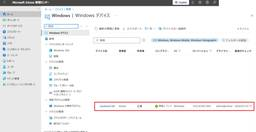
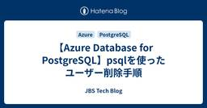
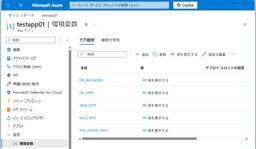
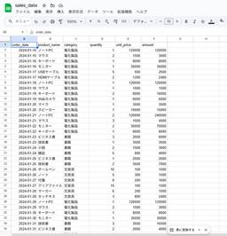

JBS Tech Blog
https://blog.jbs.co.jp/
JBS Tech Blogは、日本ビジネスシステムズ（JBS）の社員が分担して執筆を担当し、技術情報を発信しているブログです！Microsoft製品や生成AI関係の最新情報をはじめ、様々な製品やサービスの情報を幅広く公開しています。2022年3月より運用を開始し、毎営業日の1記事以上公開を継続中です！
フィード

Microsoft Intune カスタムコンプライアンスでMicrosoft 365 Appsバージョンを判定する方法
JBS Tech Blog
Microsoft Intuneでは、標準のコンプライアンスポリシーだけでなく、Windows カスタムコンプライアンスを利用することで、PowerShellによる独自条件を用いたコンプライアンス判定が可能です。 本記事では、Microsoft 365 Appsのバージョンを基準にデバイスのコンプライアンスを判定する方法についてまとめます。 検出スクリプトの作成 JSONファイルの作成 コンプライアンスポリシーの作成 カスタムコンプライアンス判定結果 おわりに 検出スクリプトの作成 まずは、対象デバイスにインストールされているMicrosoft 365 Appsのバージョンを取得するPower…
1日前
Windows 「ファイル名を指定して実行」知っておくと便利なコマンド一覧 1
1
JBS Tech Blog
Windowsを扱う際に、設定値の確認箇所について迷った経験はありませんか？ そんな時に役に立つのが「ファイル名を指定して実行」です。 新卒一年目エンジニアが、アウトプットとして本記事を投稿しています。 ご参考になれば幸いです。 概要 コマンド一覧 コマンドプロンプト・PowerShell コントロールパネル コンピューターの管理 イベントビューアー ローカル ユーザーとグループ ローカルセキュリティポリシー システム情報 サービス レジストリ エディター ディスクの管理 ネットワーク設定 Windows ファイアーウォール 終わりに 概要 「ファイル名を指定して実行」とは、コマンドを入力する…
1日前

Copilot StudioのプロンプトでOfficeファイルを処理する
JBS Tech Blog
Copilot Studioでプロンプトの機能を利用する際、入力に使用できるドキュメントのはPDFのみで、Word / Excel / PowerPointなどのOfficeファイルは処理できません。ですが、前処理を実施することでOfficeファイルを処理できるようになります。 今回は、プロンプトの機能でOfficeファイルを利用できるように実装する方法を検証します。 おことわり プロンプトに追加できる入力 プロンプトに入力できる画像またはドキュメントの種類 プロンプトでOfficeファイルを処理する 前処理を行わない時点での動作確認 エージェントの作成 トピックの作成 添付ファイルの受け取り…
2日前
ZCC から ZIA（SME）Secure Tunnel 作成までのフロー
JBS Tech Blog
本記事では、運用・設計者向けに、Zscaler Client Connector（ZCC）から ZIA（SME / Zscaler Service Edge）への Secure Tunnel が作成されるまでの内部フローを整理します。 Secure Tunnel の挙動を正しく理解することで、トラブルシューティングや設計上の判断をスムーズに行えるようになることを目的としています。 全体フロー クラウド確認 サービス確認 IdP認証 デバイス登録 PAC取得 ZIA SME との Secure Tunnel 確立 まとめ 全体フロー はじめに、ZCCからZIA SMEトンネルまでの全体フローを説…
2日前
【SharePoint Tips】リストの列の内部名を半角英数字に設定する
JBS Tech Blog
こんにちは。SharePoint Online(以下SPOと略称)のちょっとしたテクニックを紹介できればと思います。 SPOのWebパーツ機能の一つであるリストですが、SPOを使う上で非常に利用頻度の高いコンテンツだと思います。使い方は様々ですが、今回はリストの裏側部分の注意すべき点を紹介します。 SPOのリスト,内部名とは リストについて 内部名について なぜ内部名を半角英数字にした方が良いのか まとめ SPOのリスト,内部名とは リストについて まずはリストについて説明します。SPOのリストとは Excel の表のようにデータを管理できる仕組みです。複数の人と情報を共有しながら、一覧で管理…
3日前
FSMOロールとは？Active Directoryに特別な役割がある理由
JBS Tech Blog
Active Directoryドメインサービス(以下、ADDS)を学び始めると、「FSMOロール」という言葉が出てきます。 FSMOロールは、Flexible Single Master Operationsの略称で、少し難しい印象を持ったり、名前だけを見ると覚えるのが大変そうに感じたりするかもしれません。 ですが、FSMOロールはADDSが正しく動作するために必要な重要な仕組みのひとつのため、避けては通れません。 本記事では、設定方法や細かい技術の話は行わず、「FSMOロールとは何か」といった基本的な考え方を中心に解説します。 FSMOロールとは FSMOロールには5つの役割がある FSM…
3日前

【Azure Database for PostgreSQL】psqlを使ったユーザー削除手順
JBS Tech Blog
前回は、psqlを使用してAzure Database for PostgreSQLにてユーザーを作成する手順を説明しました。 blog.jbs.co.jp 本記事では、psqlを使用してAzure Database for PostgreSQLにて作成したユーザーを削除する手順を説明します。 psqlのインストールやAzure Database for PostgreSQLへの接続手順については、ユーザー作成手順の記事にて記載していますので、ぜひご覧ください。 権限削除手順 ユーザー削除手順 最後に 権限削除手順 権限削除手順を説明します。 以下コマンドを入力し、現時点で対象ユーザーに付与さ…
3日前
SaaS版FLY プロジェクト設定
JBS Tech Blog
クラウド活用が進む中、Microsoftが提供するクラウド製品は広く利用されています。 とくにMicrosoft TeamsやExchange Onlineは、多くの企業で欠かせない存在となっています。 こうした Microsoft 製品のデータ移行をサポートするツールとして、AvePoint が提供している FLY があります。 従来はオンプレミス環境からクラウド環境へ移行するための Server 版 FLY が中心でしたが、近年ではクラウド間のデータ移行に対応した SaaS 版 FLY もリリースされました。 現在では、Microsoft Teams、Exchange Online、Sha…
4日前

【Microsoft×生成AI連載】【Microsoft 365 Copilot】Copilot StudioのアダプティブカードをCopilot Chatで作成してみた
JBS Tech Blog
【Microsoft×生成AI連載】シリーズです！ 今回は、Microsoft Copilot Studio（以下、Copilot Studio）のエージェントで利用できるアダプティブカードを作成する際に、Microsoft 365 Copilot Chat（以下、Copilot Chat）を活用できるか試してみました。 なお、アダプティブカードについては下記記事を併せてご確認いただけますと幸いです。 blog.jbs.co.jp これまでの連載 Copilot Studioのアダプティブカードのカスタマイズ 文章で説明して作成 画像から作成 利用シーンとメリット、注意点 利用シーン メリット…
4日前
BigQuery初心者がデータ分析を始めてみた【第3回】公開データセットとパーティション分割
JBS Tech Blog
BigQueryには公開データセットが用意されており、無料で大規模データを分析できます。また、パーティション分割を活用することで、スキャン量とコストを大幅に削減できます。 本記事では、Google Trendsのデータセットを使って、これらの応用機能を実際に体験していきます。 はじめに 公開データセットへのアクセス アクセス手順 テーブル構造の確認 パーティション分割テーブルの活用 パーティションを使わないクエリ パーティションを使ったクエリ スキャン量の比較 パーティション分割が有効な場面 その他のBigQuery独自機能 クラスタリング マテリアライズドビュー BI Engine クエリコ…
4日前

Oracle Database@Azure ～ AppServiceとの連携（後編）
JBS Tech Blog
前回の記事、AppServiceとの連携（前編）では、DB、AppServiceの構築、アプリケーションの作成について説明しました。 Oracle Database@Azure ～ AppServiceとの連携（前編） - JBS Tech Blog 今回の後編では、作成したアプリケーションのビルド、AppServiceへのデプロイ、アプリケーションの動作確認を行います。 ビルド デプロイ 環境変数設定 ウォレットのアップロード アプリのアップロード 動作確認 おわりに ビルド 前編で作成したLinuxの開発環境のプロジェクトディレクトリ my-adb-app 直下に移動して、mvnw コマン…
5日前
【Teams Phone】PowerShellによるリソースアカウントの一括作成
JBS Tech Blog
Teams Phone を効率的に運用するためには、自動応答（Auto Attendant）や 通話キュー（Call Queue）で使用するリソースアカウントの作成・管理が欠かせません。 特に複数拠点や部門を持つ環境では、GUIで1件ずつ作成する方法は非効率です。 本記事では、PowerShellを利用してCSVファイルの情報をもとに、Teams Phoneのリソースアカウントを一括作成する方法をご紹介します。 ※本記事は、Microsoft Teams 管理者を対象としています。 本記事でできること 事前準備 必要なモジュール 必要な権限 CSVファイルの準備 リソースアカウントの作成 Ap…
5日前
Copilot Studioのプロンプトからナレッジを参照する
JBS Tech Blog
Copilot Studioから利用できるプロンプトの機能では、ナレッジを参照させたうえでタスクを実行することが可能です。ナレッジを参照させることで、生成AIの知識だけでなく、外部のデータをもとにタスクを実行できるようになります。 今回は、プロンプトの機能にナレッジを追加する方法を検証します。 おことわり プロンプトへのナレッジ追加 プロンプトにナレッジを追加する 事前準備 利用するナレッジ レビュー対象のドキュメント エージェントの作成 プロンプトの作成 ナレッジの追加 テストデータの追加 プロンプトの記述 プロンプトの動作確認 おわりに おことわり 今回の記事は、プロンプトの機能に触れたこ…
5日前
Copilot Studioで変更したエージェント名がCopilot Chatに反映されない場合の対処方法
JBS Tech Blog
Microsoft Copilot Studio（以下Copilot Studio）で作成したエージェントを Microsoft 365 Copilot（以下、Copilot Chat）に公開して利用している中で、エージェント名を変更しても Copilot Chat 側に旧名称のまま表示される事象が発生しました。 再公開を実施しているにもかかわらず名称が更新されないため、原因調査と検証を行い、解決に至った手順をまとめます。 ※本記事の内容は2026年2月時点で確認した挙動に基づいています。 ※今後のアップデートにより、動作やUIが変更される可能性があります。 発生した事象 考えられる原因 解決…
5日前

BigQuery初心者がデータ分析を始めてみた【第2回】ネイティブテーブルと外部テーブルの使い分け
JBS Tech Blog
BigQueryには、ネイティブテーブルと外部テーブルの2種類のテーブルがあります。それぞれにメリット・デメリットがあり、用途に応じて使い分けることが重要です。 本記事では、実際に両方のテーブルを作成し、パフォーマンスやコストの違いを比較しながら、使い分けのポイントを解説します。 はじめに 外部テーブルの作成 スプレッドシートの準備 外部テーブルの作成手順 ネイティブテーブルと外部テーブルの比較 パフォーマンスの違い コスト管理の違い スプレッドシート外部テーブルの利点 使い分けのポイント まとめ はじめに 【第1回】では、BigQueryの基本操作として、ネイティブテーブルの作成とクエリ実行…
5日前
【Microsoft×生成AI連載】【Teams】Teamsの「話者サマリー」で発言内容を見やすく整理
JBS Tech Blog
Teams には、会議をもっと振り返りやすくするための便利な機能がいくつもあります今回ご紹介するのは、会議後に「誰がどんな話をしていたか」を確認しやすくなる 話者サマリー です。会議の内容をあとから見返したいとき、トランスクリプトを最初から最後まで読むのは意外と面倒だと思います。そんなときに役立つのがこの「話者サマリー」機能になります。
6日前

Microsoft Entra Joinした端末に、Microsoft Entra ID上のユーザーでサインインできない事象の解決方法
JBS Tech Blog
Microsoft Entra ID（以下Entra ID）に参加した仮想マシンの端末が、テナント上のアカウントを使用して端末にログインできないエラーが発生しました。 本記事では、このエラーの原因と解決方法について解説します。 前提条件 事象 切り分けの実施方針 CredSSPの無効化 NLAの無効化 認証されたユーザーグループの追加 切り分けの実施手順 CredSSPの無効化 NLAの無効化 認証されたユーザーグループの追加 動作確認 最後に 前提条件 Azure上にWindows11の仮想マシンを作成し、当該仮想マシンをMicrosoft Entra IDに参加させた構成を想定します。 事…
9日前
Claude CodeをWindows環境とMicrosoft Foundryを用いて利用する方法
JBS Tech Blog
Claude Codeを利用する際の認証方法は、Claudeアカウントを利用する方法と、APIキーを用いる方法があります。 本記事ではWindows環境とMicrosoft Foundry（以下、Foundryと記載します）のAPIキーを用いたClaude Codeの初期設定をする方法について解説します。 事前準備 Git for Windowsのインストール Foundryでのモデルデプロイと各種情報取得 Claude Codeのインストール APIキーの設定 補足：Claude Code利用時に便利なコマンド 起動時に利用 起動中に利用 まとめ 事前準備 本節では、Windows環境でCl…
10日前
【Microsoft×生成AI連載】Microsoft 365 CopilotのPrompt Coachを使ってみた
JBS Tech Blog
【Microsoft×生成AI連載】シリーズの記事です。 Microsoft 365 Copilotには、Prompt Coachというプロンプト作成支援機能があります。 本記事では、このPrompt Coachについて紹介します。 これまでの連載 Prompt Coachの紹介 Prompt Coachの使用方法 Prompt Coachを使ってみる Prompt Coachを使用する際のTips 制約条件がある場合は最初に必ず伝える 判断が必要なところは数値を用いる 利用シーンとメリット、注意点 利用シーン メリット 注意点 まとめ おまけ(Copilot Chatによる本記事の要約) こ…
10日前
BigQuery初心者がデータ分析を始めてみた【第1回】プロジェクト作成からクエリ実行まで
JBS Tech Blog
BigQueryはGoogleが提供するクラウドデータウェアハウスサービスで、大量のデータを高速に分析できます。この記事では、BigQueryの基本的な操作方法やその特徴を解説し、実際の利用シーンでの利便性を紹介します。
10日前
【Microsoft Teams】録画後に「OneDrive が有効になっていません」と表示され保存できない事象の原因と対処法
JBS Tech Blog
Microsoft Teams（以下、Teams）で会議を録画した後に、「OneDriveが有効になっていません」というエラーが表示され、録画データが保存されない事象に遭遇しました。 本記事では、実際に発生したエラー内容と切り分けの過程、そして最終的に特定できた原因と対処法を整理します。同様のトラブルに遭遇した方の参考になれば幸いです。 ※本検証で使用したアカウントは、Microsoft 365 管理センターで新規作成したユーザーアカウントです。OneDrive への初回アクセス前の状態でした。 エラー概要 実施した確認・切り分け OneDrive の利用確認（Web） Windowsクライア…
10日前
条件付きアクセスの「サインインの頻度」を設定し、再認証のタイミングを制御する
JBS Tech Blog
Microsoft Entra ID を利用している環境では、Microsoft 365 アカウントに対する多要素認証（MFA）の要求頻度を制御したいといった声も少なくありません。 本記事では、条件付きアクセス制御の設計者を対象として、条件付きアクセスの「サインインの頻度」を利用した定期的な多要素認証（MFA）について、設定方法や挙動、運用上の注意点を解説します。 「サインインの頻度」とは 条件付きアクセス「サインインの頻度」の設定方法について 「サインインの頻度」の設定方法 動作検証 ブラウザー版：Outlook on the web デスクトップ版：New Outlook 「サインインの頻…
10日前
Copilot Studio エージェントで Azure Monitor アラート調査を自動化してみた
JBS Tech Blog
Azure Monitorのアラートを元に、Microsoft Copilot Studioのエージェントが自動で分析し、Teamsにレポートを投稿するシステムの検証事例。効率化に興味がある方必見。
11日前
【Microsoft×生成AI連載】Microsoft Copilot StudioでMicrosoft SharePoint Lists MCPを使用してみた
JBS Tech Blog
【Microsoft×生成AI連載】寺澤です。今回はMicrosoft Copilot StudioでMicrosoft SharePoint Lists MCPを使用します。 これまでは、SharePointコネクタを用い内部処理を細かく設計・設定する必要がありましたが、MCPを使用することで、どのような活用が可能かを検証してみます。 Microsoft Copilot Studioに興味がある方、普段から利用されている方などさまざまな方に読んでいただきたい記事となっておりますので、ぜひご覧ください。 ※この記事の情報は2026/3/9時点のものです。 これまでの連載 Microsoft S…
11日前
Copilot StudioのエージェントでHuman in the loopを実装する
JBS Tech Blog
Copilot Studioでエージェントを作成すると、メールの送信やテーブルへのデータ登録など、外部へのアクションを伴う動作をさせることが出来ます。 一方、想定外のアクションをエージェントが実行しないよう、人間が承認したうえで動作をさせたいケースもあるかと思います。そういった動作を実現するため、Copilot StudioではHuman in the loopの仕組みを実装できるようになっています。 今回は、Copilot Studioを利用してHuman in the loopを実装する方法を検証します。 おことわり Human in the loopとは Human in the loo…
11日前
SharePoint Online：選択肢列の値が変更できない場合の一括変換方法（クイック操作の値の設定を活用）
JBS Tech Blog
SPOリストの選択肢列変更で直面する問題に、クイック操作による一括更新手順を紹介。運用効率を高めるヒントを得られます。
12日前
Snowflake Openflow の概要をまとめてみた
JBS Tech Blog
近年、SaaSの普及や生成AIの活用により、RDBだけでなくドキュメントやログ、イベントデータなど多様な形式のデータを迅速にSnowflakeへ集約し、分析・AIに活かすニーズが高まっています。 一方で、従来のETLやELTツールでは、非構造化データや柔軟なフロー制御、リアルタイム処理を同一基盤で扱うことが難しいケースも少なくありません。 Openflowは、あらゆるデータソースとSnowflakeで柔軟なデータフローを構成でき、バッチ、ストリーミング、非構造化まで統合的に扱えるデータ統合プラットフォームです。Apache NiFiベースのオープンな設計で、AI活用に直結するパイプラインを短時…
12日前
Copilot Studioでチャットに入力されたファイルのURLを処理するエージェントを作成する
JBS Tech Blog
Copilot Studioは、AIエージェントを簡単に構築できる製品です。単純なチャットボットを構築することももちろんですが、より自律的判断を伴うタスクを実行することも可能です。 今回は、Copilot Studioを利用した自律的判断を伴うエージェントの例として、チャットに入力したSharePointファイルURLを処理するチャットボットを実装します。 おことわり 今回作成するエージェント 作成直後のエージェントの動作 事前準備 エージェントの作成 テストデータの準備 エージェントの動作確認 ファイルのURLを処理する機能の実装 トピックの作成 コネクタの追加 エージェントフローの実装 エ…
12日前
【Teams Phone】シリアルルーティングによる「順次鳴動」の設定方法
JBS Tech Blog
Teams Phoneの導入において、通話キューを設定する際、「同時に全員を鳴らすのではなく、順番に電話を鳴らしたい」という要件は非常によくあります。 そのようなケースで利用されるのが シリアルルーティング（Serial Routing） です。 Microsoftの公式ドキュメントにも概要の記載はありますが、実際の画面に即した具体的な設定方法や各設定項目の考え方までは明記されていない部分もあります。 Microsoft Teamsで通話キューを作成する - Microsoft Teams | Microsoft Learn そこで本記事では、Teams Phoneの通話キューにおけるシリアル…
12日前